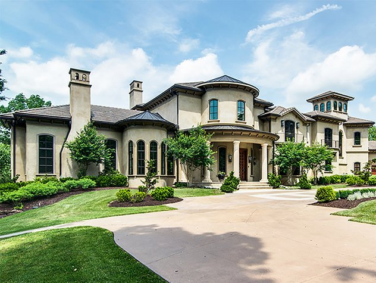

Pizza Sales Analysis
In this project we analyzed the Pizza Sales considering daily,weekly and monthly trends.KPI factors are also analyzed to provide decisions and measure the performance. PowerBi is used for data visualization.
A Tech Enthusiast skilled in SQL,Python,Power BI, Machine Learning and Excel
In this project we analyzed the Pizza Sales considering daily,weekly and monthly trends.KPI factors are also analyzed to provide decisions and measure the performance. PowerBi is used for data visualization.
This project aims to explore the Covid-19 dataset in SQL Server.
In this project Nashville Housing dataset is cleaned in SQL Server.
